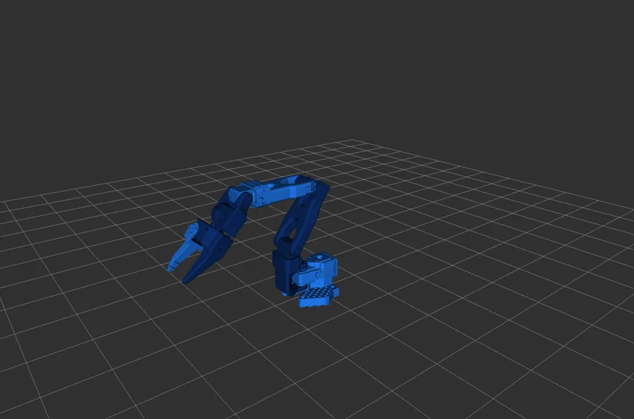
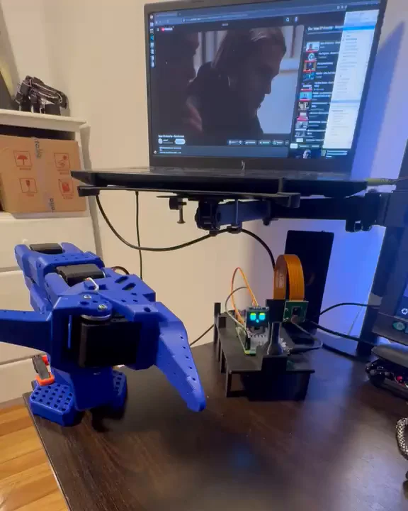
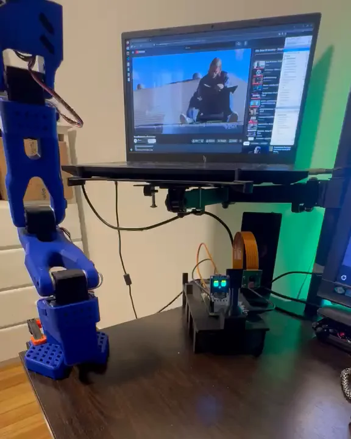
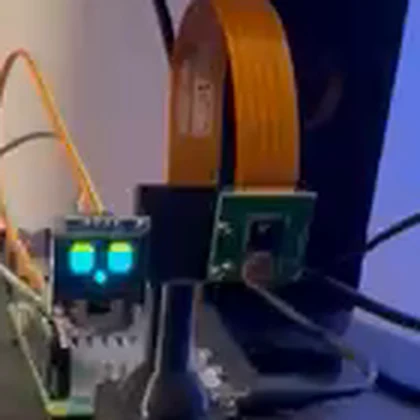
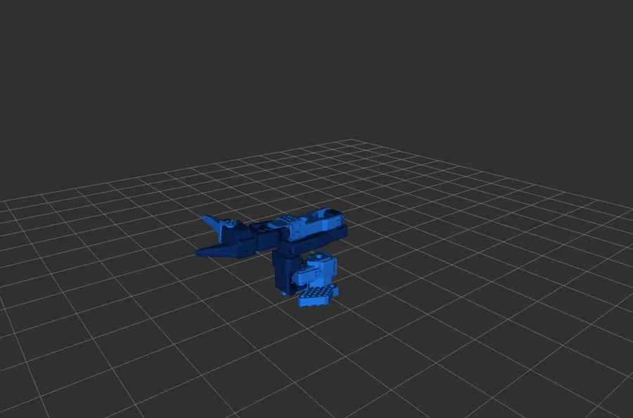
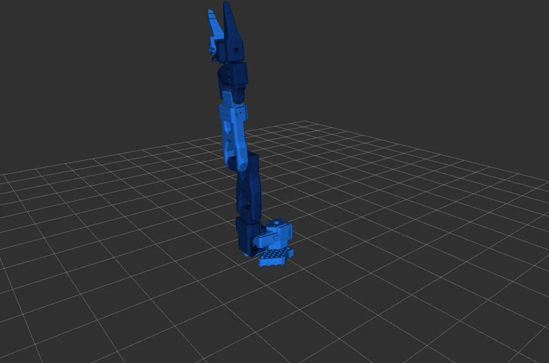
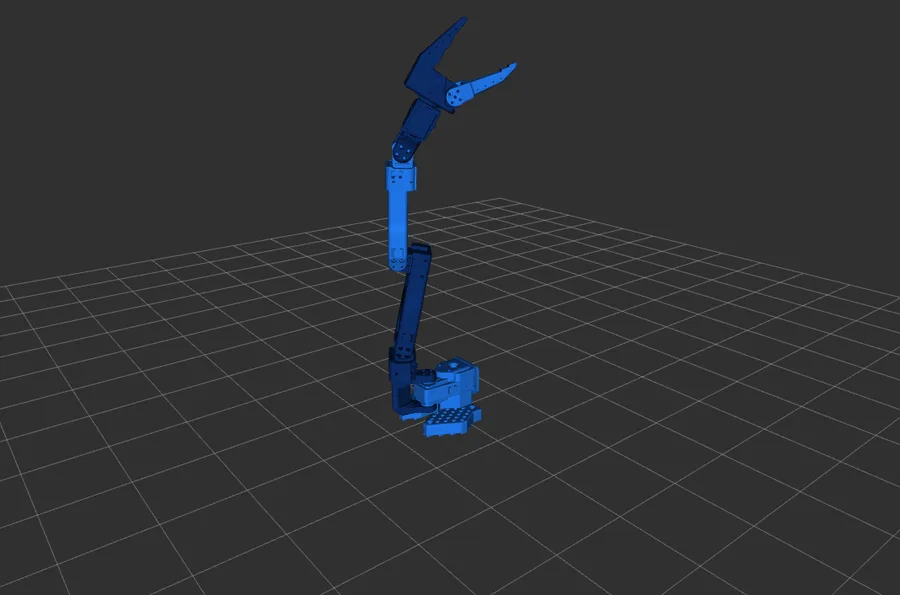
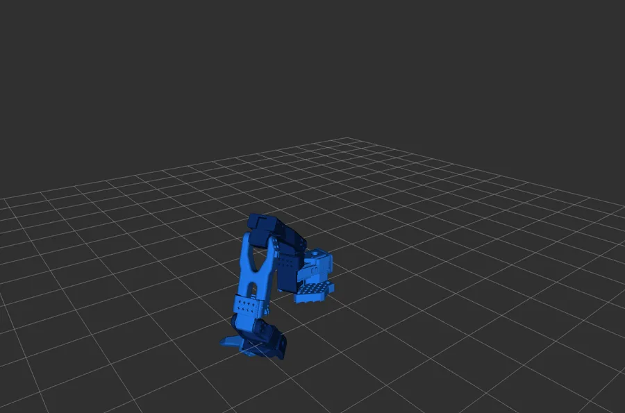

ArmCar: Mobile Manipulator with a Voice-Controlled AI Agent
A wheeled robot with an SO-101 arm, split between a PC (brain) and a Raspberry Pi 5 (body) over ROS 2 Jazzy. It is driven with a DualSense controller, joint by joint or with inverse kinematics, and has a Claude-based agent you talk to by voice that can look through a webcam and moves the real arm.
Code and docs on GitHub → Armcar

01What it does
- DualSense teleoperation over Bluetooth, joint by joint or in Cartesian space with inverse kinematics (pure numpy).
- Differential drive with two DC motors and an L298N, with a watchdog that stops the motors if
/cmd_velstops arriving. - AI agent built on Claude, with tools to move the arm; every command goes through joint limits and interpolation before reaching the servos.
- Local voice, no cloud: wake word, speech recognition with Whisper (faster-whisper), speech with Piper, and it can be interrupted while talking.
- Animated face on a 0.96″ I2C OLED that changes when the robot thinks, looks or talks.
- Eyes: a USB webcam takes a photo when the agent asks for one, and Claude describes the scene.
02Voice agent on the real arm
The voice agent now drives the real SO-101, not just RViz. Everything runs as in the architecture below: the wake word (“Pituca”) and speech recognition on the PC, Claude decides which arm tool to call, the command goes through limits and interpolation, and the Raspberry Pi 5 moves the servos while the OLED face reacts. In the clip I ask it, in Spanish, to move the arm, raise it, go back home and close the gripper. Turn on subtitles for an English translation.



03Architecture
The PC is the brain and the Raspberry Pi 5 the body, both on ROS 2 Jazzy / Ubuntu 24.04. Nothing on the PC talks to hardware directly; it only publishes topics. That is why IK and the AI agent were added without touching a line on the Pi.
| teleop_pkg (PC) | DualSense teleop: joint by joint or IK |
|---|---|
| armcar_description (PC) | URDF/xacro with official meshes and RViz bridge |
| brain_pkg (PC) | Claude agent node and a terminal client |
| voice_pkg (PC) | Speech-to-text and text-to-speech nodes |
| arm_driver_pkg (Pi) | Driver for the 6 ST3215 servos and a calibration CLI |
| motor_driver_pkg (Pi) | L298N drive with watchdog |
| face_pkg / camera_pkg (Pi) | OLED face and on-demand webcam capture |
04RViz as a digital twin
The URDF uses the real joint limits (calibrated servo ticks), not the nominal ones, so RViz never shows a pose the arm cannot reach. The teleop and the agent publish the same /joint_commands that drives the real arm, so what RViz shows with the Pi off is exactly what the hardware will do.




05Hardware
| Arm | SO-101 with 6 Feetech ST3215 servos |
|---|---|
| Compute | Raspberry Pi 5 (Ubuntu 24.04 Server) + PC |
| Drive | 2 × 12 V DC motors, L298N H-bridge |
| I/O | 0.96″ SSD1306 OLED, USB webcam, DualSense, USB mic and speaker on the PC |
06Next steps
- Test the full voice + camera loop on the real arm (pick an object it sees).
- Model the car chassis in the URDF and mount the arm on it.
- Record demonstrations with two cameras for a LeRobot dataset.